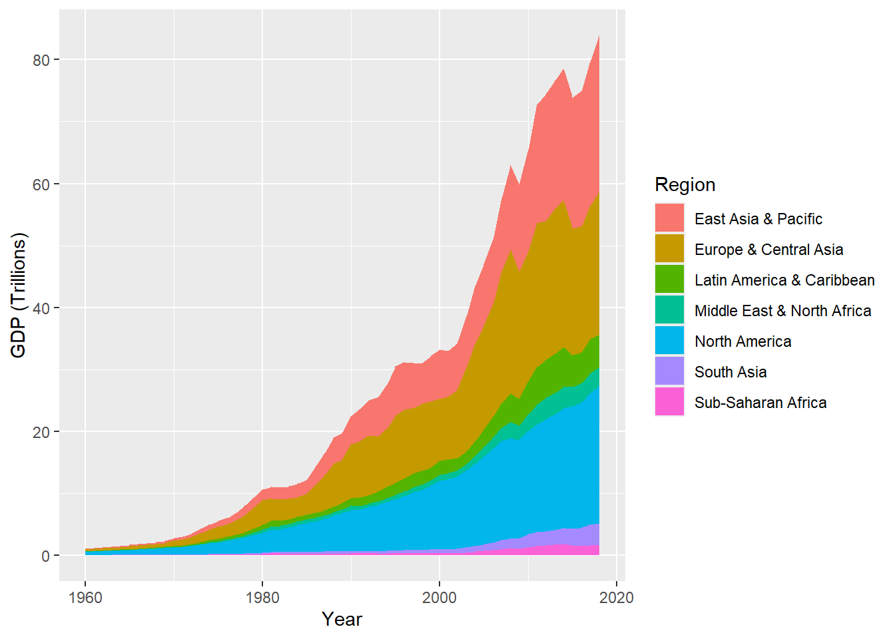
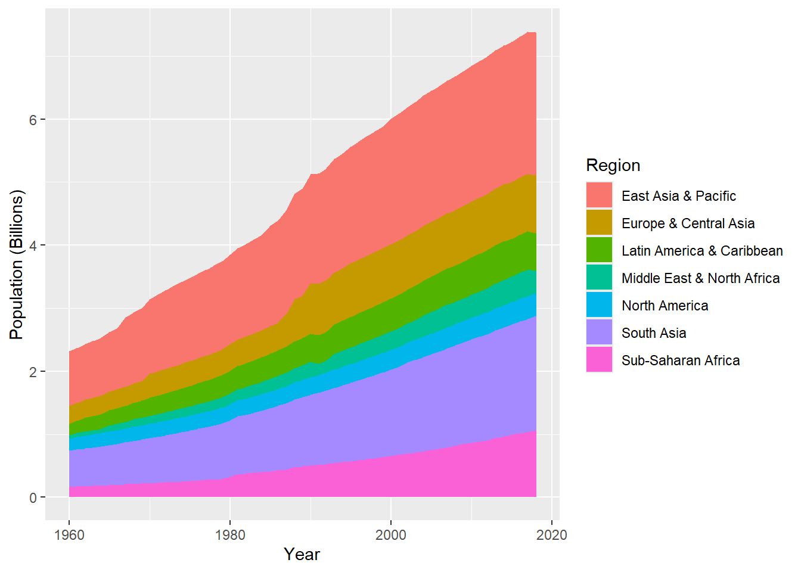
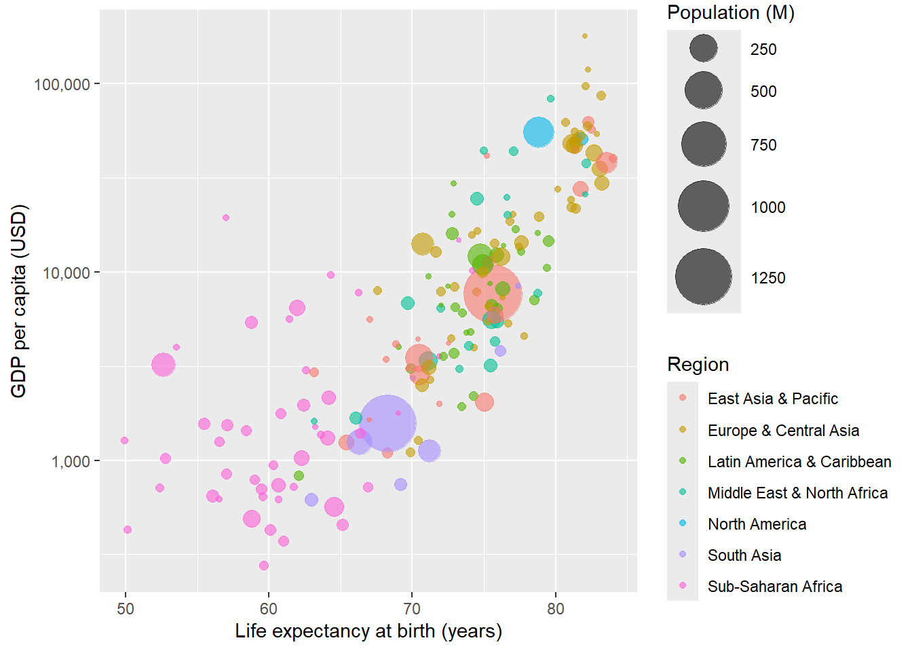
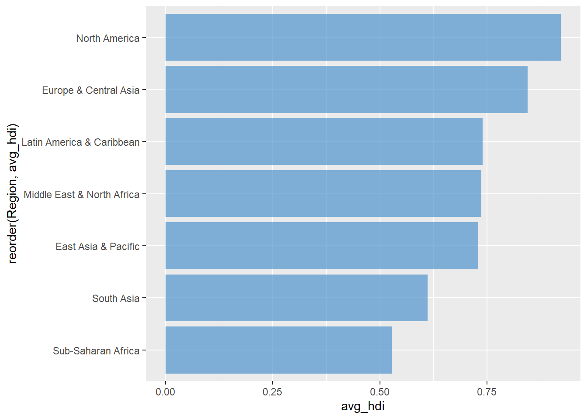
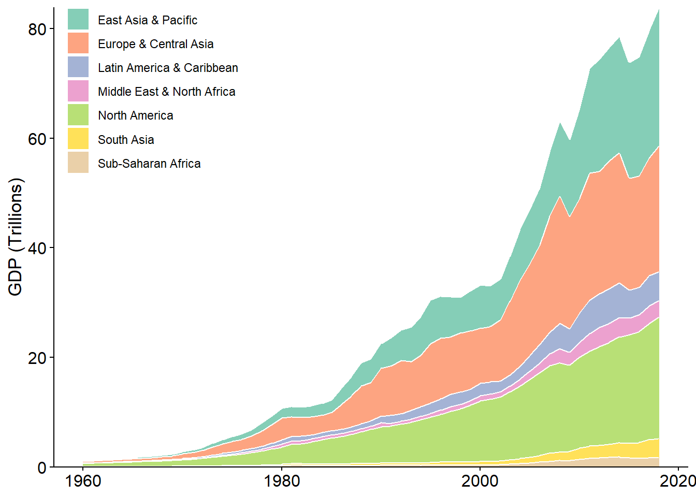
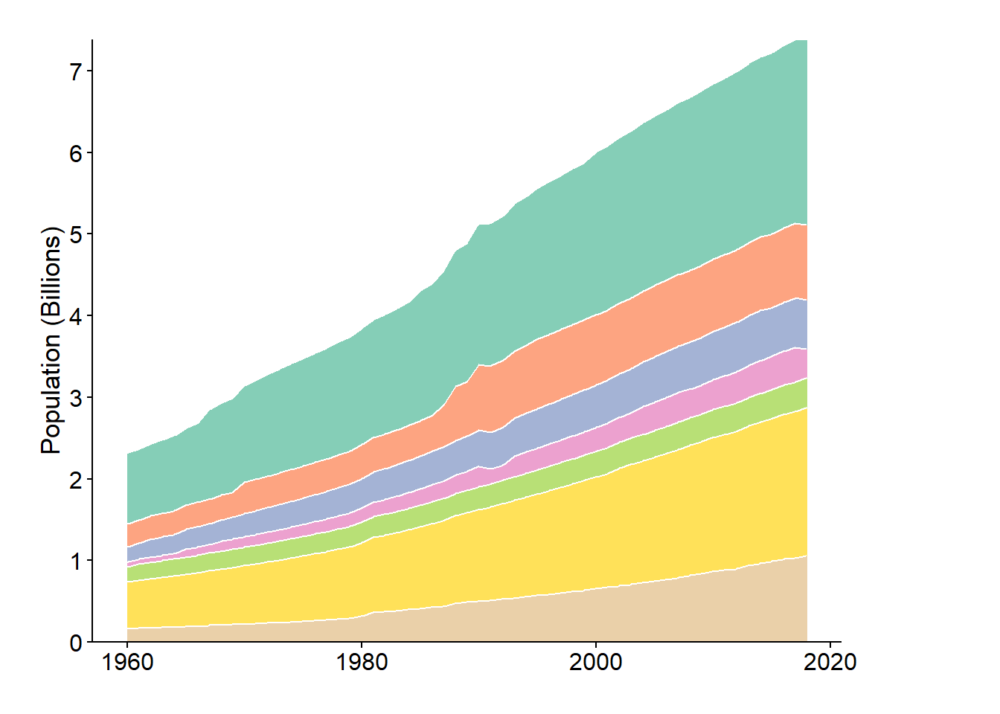
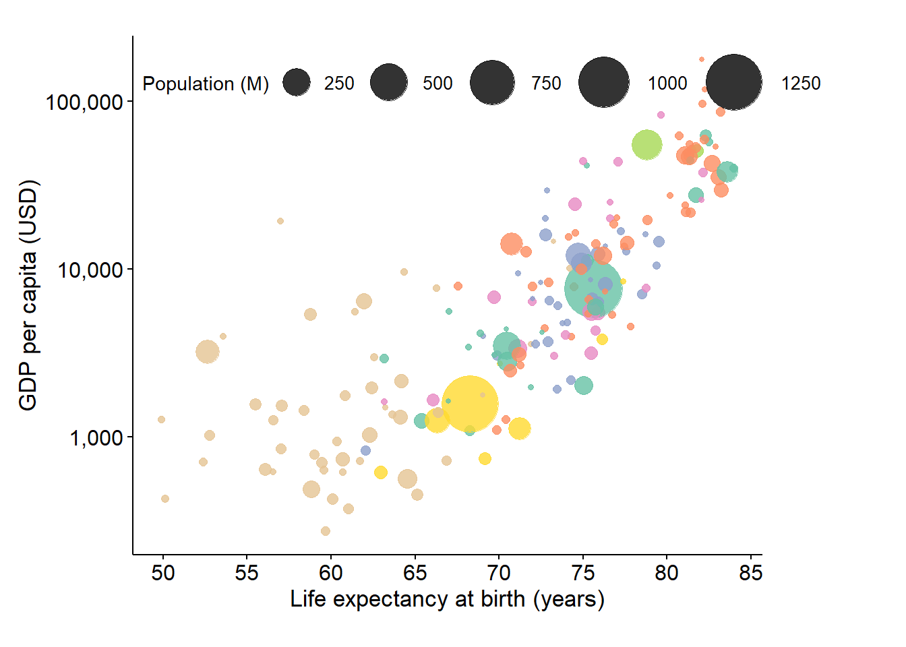
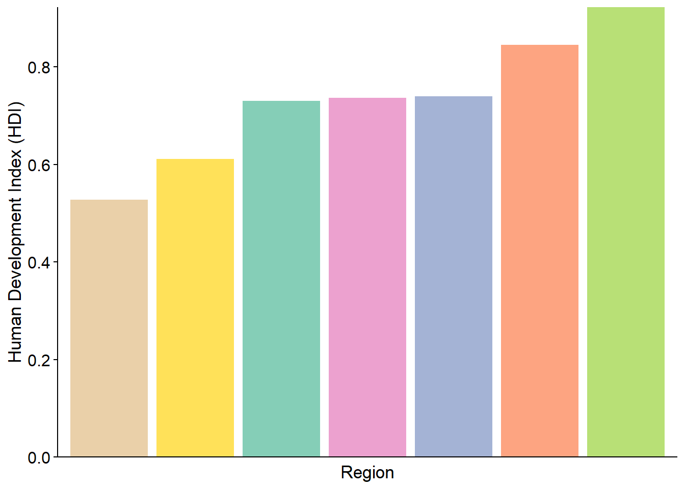
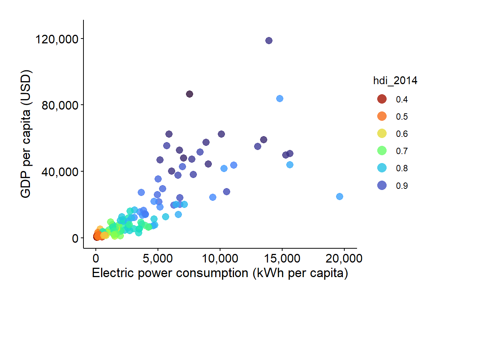

# import libraries
library(tidyverse)
library(readxl)
library(RColorBrewer)
library(viridis)
library(patchwork)
library(skimr)World Economic Report (1960-2018)
Data Preparation and QA
# Load world bank data
world_bank = read_xlsx(path = "E:\\Data\\WorldBank.xlsx")
head(world_bank)# A tibble: 6 × 15
`Country Name` `Country Code` Region IncomeGroup Year Birth rate, crude (p…¹
<chr> <chr> <chr> <chr> <dbl> <dbl>
1 Afghanistan AFG South … Low income 2018 NA
2 Afghanistan AFG South … Low income 2017 33.2
3 Afghanistan AFG South … Low income 2016 34.0
4 Afghanistan AFG South … Low income 2015 34.8
5 Afghanistan AFG South … Low income 2014 35.7
6 Afghanistan AFG South … Low income 2013 36.7
# ℹ abbreviated name: ¹`Birth rate, crude (per 1,000 people)`
# ℹ 9 more variables: `Death rate, crude (per 1,000 people)` <dbl>,
# `Electric power consumption (kWh per capita)` <dbl>, `GDP (USD)` <dbl>,
# `GDP per capita (USD)` <dbl>,
# `Individuals using the Internet (% of population)` <dbl>,
# `Infant mortality rate (per 1,000 live births)` <dbl>,
# `Life expectancy at birth (years)` <dbl>, …# Check data types
glimpse(world_bank)Rows: 12,449
Columns: 15
$ `Country Name` <chr> "Afghan…
$ `Country Code` <chr> "AFG", …
$ Region <chr> "South …
$ IncomeGroup <chr> "Low in…
$ Year <dbl> 2018, 2…
$ `Birth rate, crude (per 1,000 people)` <dbl> NA, 33.…
$ `Death rate, crude (per 1,000 people)` <dbl> NA, 6.5…
$ `Electric power consumption (kWh per capita)` <dbl> NA, NA,…
$ `GDP (USD)` <dbl> 1936300…
$ `GDP per capita (USD)` <dbl> 520.897…
$ `Individuals using the Internet (% of population)` <dbl> NA, 13.…
$ `Infant mortality rate (per 1,000 live births)` <dbl> 47.9, 4…
$ `Life expectancy at birth (years)` <dbl> NA, 64.…
$ `Population density (people per sq. km of land area)` <dbl> 56.9378…
$ `Unemployment (% of total labor force) (modeled ILO estimate)` <dbl> 1.542, …# Calculate population
world_bank <- world_bank %>%
mutate(`Population (M)` = (`GDP (USD)` / `GDP per capita (USD)`) / 1e6)
head(world_bank)# A tibble: 6 × 16
`Country Name` `Country Code` Region IncomeGroup Year Birth rate, crude (p…¹
<chr> <chr> <chr> <chr> <dbl> <dbl>
1 Afghanistan AFG South … Low income 2018 NA
2 Afghanistan AFG South … Low income 2017 33.2
3 Afghanistan AFG South … Low income 2016 34.0
4 Afghanistan AFG South … Low income 2015 34.8
5 Afghanistan AFG South … Low income 2014 35.7
6 Afghanistan AFG South … Low income 2013 36.7
# ℹ abbreviated name: ¹`Birth rate, crude (per 1,000 people)`
# ℹ 10 more variables: `Death rate, crude (per 1,000 people)` <dbl>,
# `Electric power consumption (kWh per capita)` <dbl>, `GDP (USD)` <dbl>,
# `GDP per capita (USD)` <dbl>,
# `Individuals using the Internet (% of population)` <dbl>,
# `Infant mortality rate (per 1,000 live births)` <dbl>,
# `Life expectancy at birth (years)` <dbl>, …# Review missing values as % of total DataFrame
colSums(is.na(world_bank)) / nrow(world_bank) *100 Country Name
0.000000
Country Code
0.000000
Region
0.000000
IncomeGroup
0.000000
Year
0.000000
Birth rate, crude (per 1,000 people)
8.105069
Death rate, crude (per 1,000 people)
8.297855
Electric power consumption (kWh per capita)
53.024339
GDP (USD)
23.062093
GDP per capita (USD)
23.086192
Individuals using the Internet (% of population)
59.322034
Infant mortality rate (per 1,000 live births)
19.800787
Life expectancy at birth (years)
10.225721
Population density (people per sq. km of land area)
4.851795
Unemployment (% of total labor force) (modeled ILO estimate)
58.165314
Population (M)
23.086192 # Summary of the Dataset
skim(world_bank) | Name | world_bank |
| Number of rows | 12449 |
| Number of columns | 16 |
| _______________________ | |
| Column type frequency: | |
| character | 4 |
| numeric | 12 |
| ________________________ | |
| Group variables | None |
Variable type: character
| skim_variable | n_missing | complete_rate | min | max | empty | n_unique | whitespace |
|---|---|---|---|---|---|---|---|
| Country Name | 0 | 1 | 4 | 30 | 0 | 211 | 0 |
| Country Code | 0 | 1 | 3 | 3 | 0 | 211 | 0 |
| Region | 0 | 1 | 10 | 26 | 0 | 7 | 0 |
| IncomeGroup | 0 | 1 | 10 | 20 | 0 | 5 | 0 |
Variable type: numeric
| skim_variable | n_missing | complete_rate | mean | sd | p0 | p25 | p50 | p75 | p100 | hist |
|---|---|---|---|---|---|---|---|---|---|---|
| Year | 0 | 1.00 | 1.98900e+03 | 1.703000e+01 | 1960.00 | 1.97400e+03 | 1.989000e+03 | 2.004000e+03 | 2.01800e+03 | ▇▇▇▇▇ |
| Birth rate, crude (per 1,000 people) | 1009 | 0.92 | 2.86400e+01 | 1.313000e+01 | 6.90 | 1.66000e+01 | 2.755000e+01 | 4.088000e+01 | 5.82300e+01 | ▇▇▆▇▂ |
| Death rate, crude (per 1,000 people) | 1033 | 0.92 | 1.05900e+01 | 5.490000e+00 | 1.13 | 6.86000e+00 | 9.200000e+00 | 1.269000e+01 | 5.44400e+01 | ▇▃▁▁▁ |
| Electric power consumption (kWh per capita) | 6601 | 0.47 | 3.17529e+03 | 4.467140e+03 | 0.00 | 3.90390e+02 | 1.541890e+03 | 4.313770e+03 | 5.47992e+04 | ▇▁▁▁▁ |
| GDP (USD) | 2871 | 0.77 | 1.70074e+11 | 8.979866e+11 | 8824450.00 | 1.39301e+09 | 7.275305e+09 | 4.857783e+10 | 2.05000e+13 | ▇▁▁▁▁ |
| GDP per capita (USD) | 2874 | 0.77 | 8.23181e+03 | 1.617354e+04 | 34.79 | 5.13150e+02 | 1.852810e+03 | 7.774570e+03 | 1.89171e+05 | ▇▁▁▁▁ |
| Individuals using the Internet (% of population) | 7385 | 0.41 | 2.33300e+01 | 2.832000e+01 | 0.00 | 5.90000e-01 | 8.410000e+00 | 4.130000e+01 | 1.00000e+02 | ▇▂▁▁▁ |
| Infant mortality rate (per 1,000 live births) | 2465 | 0.80 | 5.17000e+01 | 4.613000e+01 | 1.40 | 1.44700e+01 | 3.700000e+01 | 7.820000e+01 | 2.79400e+02 | ▇▃▁▁▁ |
| Life expectancy at birth (years) | 1273 | 0.90 | 6.40400e+01 | 1.149000e+01 | 18.91 | 5.59200e+01 | 6.728000e+01 | 7.269000e+01 | 8.54200e+01 | ▁▂▅▇▅ |
| Population density (people per sq. km of land area) | 604 | 0.95 | 3.18860e+02 | 1.593410e+03 | 0.10 | 1.97800e+01 | 6.401000e+01 | 1.448200e+02 | 2.13891e+04 | ▇▁▁▁▁ |
| Unemployment (% of total labor force) (modeled ILO estimate) | 7241 | 0.42 | 8.30000e+00 | 6.290000e+00 | 0.14 | 3.69000e+00 | 6.780000e+00 | 1.121000e+01 | 3.79400e+01 | ▇▅▁▁▁ |
| Population (M) | 2874 | 0.77 | 2.99600e+01 | 1.158000e+02 | 0.01 | 1.05000e+00 | 5.390000e+00 | 1.708000e+01 | 1.39190e+03 | ▇▁▁▁▁ |
# Filter for the year 2014
world_bank_2014 = world_bank %>%
filter(Year == 2014)
head(world_bank_2014)# A tibble: 6 × 16
`Country Name` `Country Code` Region IncomeGroup Year Birth rate, crude (p…¹
<chr> <chr> <chr> <chr> <dbl> <dbl>
1 Afghanistan AFG South … Low income 2014 35.7
2 Albania ALB Europe… Upper midd… 2014 12.3
3 Algeria DZA Middle… Upper midd… 2014 25.5
4 American Samoa ASM East A… Upper midd… 2014 17.5
5 Andorra AND Europe… High incom… 2014 NA
6 Angola AGO Sub-Sa… Upper midd… 2014 43.2
# ℹ abbreviated name: ¹`Birth rate, crude (per 1,000 people)`
# ℹ 10 more variables: `Death rate, crude (per 1,000 people)` <dbl>,
# `Electric power consumption (kWh per capita)` <dbl>, `GDP (USD)` <dbl>,
# `GDP per capita (USD)` <dbl>,
# `Individuals using the Internet (% of population)` <dbl>,
# `Infant mortality rate (per 1,000 live births)` <dbl>,
# `Life expectancy at birth (years)` <dbl>, …# Load HDI table
hdi = read_csv("E:\\Data\\HDI.csv")
head(hdi)# A tibble: 6 × 1,008
iso3 country hdicode region hdi_rank_2021 hdi_1990 hdi_1991 hdi_1992 hdi_1993
<chr> <chr> <chr> <chr> <dbl> <dbl> <dbl> <dbl> <dbl>
1 AFG Afghan… Low SA 180 0.273 0.279 0.287 0.297
2 AGO Angola Medium SSA 148 NA NA NA NA
3 ALB Albania High ECA 67 0.647 0.629 0.614 0.617
4 AND Andorra Very H… <NA> 40 NA NA NA NA
5 ARE United… Very H… AS 26 0.728 0.739 0.742 0.748
6 ARG Argent… Very H… LAC 47 0.723 0.73 0.735 0.739
# ℹ 999 more variables: hdi_1994 <dbl>, hdi_1995 <dbl>, hdi_1996 <dbl>,
# hdi_1997 <dbl>, hdi_1998 <dbl>, hdi_1999 <dbl>, hdi_2000 <dbl>,
# hdi_2001 <dbl>, hdi_2002 <dbl>, hdi_2003 <dbl>, hdi_2004 <dbl>,
# hdi_2005 <dbl>, hdi_2006 <dbl>, hdi_2007 <dbl>, hdi_2008 <dbl>,
# hdi_2009 <dbl>, hdi_2010 <dbl>, hdi_2011 <dbl>, hdi_2012 <dbl>,
# hdi_2013 <dbl>, hdi_2014 <dbl>, hdi_2015 <dbl>, hdi_2016 <dbl>,
# hdi_2017 <dbl>, hdi_2018 <dbl>, hdi_2019 <dbl>, hdi_2020 <dbl>, …# select only iso3 and hdi_2014 columns
hdi_2014 = hdi %>%
select(iso3, hdi_2014)
# rename iso3 column
hdi_2014 = hdi_2014 %>%
rename(`Country Code` = iso3)
# Join 2014 data with the HDI table
wb_hdi_2014 = full_join(world_bank_2014, hdi_2014)
head(wb_hdi_2014)# A tibble: 6 × 17
`Country Name` `Country Code` Region IncomeGroup Year Birth rate, crude (p…¹
<chr> <chr> <chr> <chr> <dbl> <dbl>
1 Afghanistan AFG South … Low income 2014 35.7
2 Albania ALB Europe… Upper midd… 2014 12.3
3 Algeria DZA Middle… Upper midd… 2014 25.5
4 American Samoa ASM East A… Upper midd… 2014 17.5
5 Andorra AND Europe… High incom… 2014 NA
6 Angola AGO Sub-Sa… Upper midd… 2014 43.2
# ℹ abbreviated name: ¹`Birth rate, crude (per 1,000 people)`
# ℹ 11 more variables: `Death rate, crude (per 1,000 people)` <dbl>,
# `Electric power consumption (kWh per capita)` <dbl>, `GDP (USD)` <dbl>,
# `GDP per capita (USD)` <dbl>,
# `Individuals using the Internet (% of population)` <dbl>,
# `Infant mortality rate (per 1,000 live births)` <dbl>,
# `Life expectancy at birth (years)` <dbl>, …# Review missing values as % of total DataFrame
colSums(is.na(wb_hdi_2014)) / nrow(wb_hdi_2014)*100 Country Name
6.222222
Country Code
0.000000
Region
6.222222
IncomeGroup
6.222222
Year
6.222222
Birth rate, crude (per 1,000 people)
9.333333
Death rate, crude (per 1,000 people)
9.333333
Electric power consumption (kWh per capita)
38.222222
GDP (USD)
10.666667
GDP per capita (USD)
10.666667
Individuals using the Internet (% of population)
11.555556
Infant mortality rate (per 1,000 live births)
15.555556
Life expectancy at birth (years)
12.444444
Population density (people per sq. km of land area)
7.555556
Unemployment (% of total labor force) (modeled ILO estimate)
17.333333
Population (M)
10.666667
hdi_2014
10.666667 Prepare data for visualization
# Summarize GDP by Year and Region
gdp_pivot = world_bank %>%
group_by(Year, Region) %>%
summarise(`GDP (Trillions)` = sum(`GDP (USD)`, na.rm = TRUE)/ 1e12)
head(gdp_pivot)# A tibble: 6 × 3
# Groups: Year [1]
Year Region `GDP (Trillions)`
<dbl> <chr> <dbl>
1 1960 East Asia & Pacific 0.146
2 1960 Europe & Central Asia 0.283
3 1960 Latin America & Caribbean 0.0574
4 1960 Middle East & North Africa 0.0141
5 1960 North America 0.543
6 1960 South Asia 0.0475# Summarize Population by Year and Region
pop_pivot = world_bank %>%
group_by(Year, Region) %>%
summarise(`Population (Billions)` = sum(`Population (M)`,
na.rm = TRUE)/1e3)
head(pop_pivot)# A tibble: 6 × 3
# Groups: Year [1]
Year Region `Population (Billions)`
<dbl> <chr> <dbl>
1 1960 East Asia & Pacific 0.872
2 1960 Europe & Central Asia 0.281
3 1960 Latin America & Caribbean 0.187
4 1960 Middle East & North Africa 0.0593
5 1960 North America 0.181
6 1960 South Asia 0.573 # remove missing values from Region and hdi_2014 columns
wb_hdi_2014 = wb_hdi_2014 %>%
filter(!is.na(Region) & !is.na(hdi_2014))
# Summarize HDI by Region
wb_hdi_by_region <- wb_hdi_2014 %>%
group_by(Region) %>%
summarise(avg_hdi = mean(hdi_2014)) %>%
arrange(desc(avg_hdi))
wb_hdi_by_region# A tibble: 7 × 2
Region avg_hdi
<chr> <dbl>
1 North America 0.922
2 Europe & Central Asia 0.845
3 Latin America & Caribbean 0.740
4 Middle East & North Africa 0.737
5 East Asia & Pacific 0.730
6 South Asia 0.611
7 Sub-Saharan Africa 0.528Data Visualization
Create initial graphs for later integration into a final one-page infographic report
# Plot GDP over time by Region
ggplot(gdp_pivot, aes(x = Year, y = `GDP (Trillions)`, fill = Region)) +
geom_area() +
labs(x = "Year", y = "GDP (Trillions)")
# Plot Population over time by Region
pop_pivot %>%
ggplot(aes(x = Year, y = `Population (Billions)`, fill = Region)) +
geom_area() +
labs(x = "Year", y = "Population (Billions)")
# Prepare bubble chart data
bubble_chart_data = wb_hdi_2014 %>%
filter(!is.na(`Life expectancy at birth (years)`),
!is.na(`GDP per capita (USD)`),
!is.na(`Population (M)`))
# Calculate min and max population values
min_population = min(bubble_chart_data$`Population (M)`)
max_population = max(bubble_chart_data$`Population (M)`)
# Bubble chart: Life expectancy vs GDP per capita
ggplot(bubble_chart_data,
aes(x = `Life expectancy at birth (years)`,
y = `GDP per capita (USD)`,
size = `Population (M)`,
color = Region)) +
scale_size_continuous(range = c(1, 15),
limits = c(min_population, max_population),
breaks = c(250, 500, 750, 1000, 1250)) +
scale_y_log10(labels = scales::comma) +
geom_point(alpha = 0.60)
ggplot(wb_hdi_by_region,
aes(x = reorder(Region, avg_hdi), y = avg_hdi)) +
geom_bar(stat = "identity", fill = "steelblue3", alpha = 0.7) +
coord_flip()
# Filter out Iceland
wb_hdi_2014 <- wb_hdi_2014 %>% filter(`Country Name` != "Iceland")
# Electric Power Consumption vs. GDP per Capita
plot5 = wb_hdi_2014 %>%
ggplot(aes(x = `Electric power consumption (kWh per capita)` ,
y = `GDP per capita (USD)`,
color = hdi_2014)) +
geom_point(alpha = 0.6, size = 3) +
coord_cartesian(ylim = c(0,125000), xlim = c(0, 20000))Build final report
Combine visualizations into a single report style graphic
# Define a custom theme
custom_theme <- theme_minimal() +
theme( text = element_text(family = "Times New Roman"),
axis.text = element_text(size = 12, colour = "#000000"),
axis.title = element_text(size = 13),
panel.grid = element_blank(),
axis.line = element_line(size = 0.5, color = "black"),
axis.ticks = element_line(size = 0.5, color = "black"))
# Apply the custom theme globally
theme_set(custom_theme)plot1 = ggplot(gdp_pivot, aes(x = Year, y = `GDP (Trillions)`,
fill = Region)) +
geom_area(alpha = 0.8, colour = "white") +
scale_fill_brewer(palette = "Set2") +
scale_y_continuous(expand = c(0, 0)) +
labs(x = NULL, y = "GDP (Trillions)") +
theme(legend.title = element_blank(),
legend.position = c(0.02, 1),
legend.justification = c(0, 1), # Anchor to the top-right
legend.margin = margin(0, 0, 0, 0))
plot1
plot2 = ggplot(pop_pivot, aes(x = Year, y = `Population (Billions)`, fill = Region)) +
geom_area(alpha = 0.8, colour = "white") +
scale_fill_brewer(palette = "Set2") +
labs(x = NULL, y = "Population (Billions)") +
scale_y_continuous(breaks = seq(0, 7, by = 1),
expand = c(0, 0)) +
theme(legend.position = "none",
plot.margin = margin(t = 20, r = 80, b = 20, l = 20))
plot2
plot3 = ggplot(bubble_chart_data, aes(x = `Life expectancy at birth (years)`, y = `GDP per capita (USD)`,
size = `Population (M)`, color = Region)) +
scale_size_continuous(range = c(1, 15),
limits = c(min_population, max_population), breaks = c(250, 500, 750, 1000, 1250)) +
scale_color_brewer(palette = "Set2") +
scale_x_continuous(breaks = seq(50, 85, by = 5)) +
scale_y_log10(labels = scales::comma) +
geom_point(alpha = 0.8) +
theme(plot.margin = margin(t = 20, r = 80, b = 20, l = 10),
legend.text = element_text(size = 10),
legend.position = c(0, 1), # Position the legend at the top left
legend.justification = c(0, 1),
legend.direction = "horizontal") + # Set legend direction to horizontal
guides(colour = "none")
plot3
plot4 = ggplot(wb_hdi_by_region, aes(reorder(Region, avg_hdi), avg_hdi, , fill = Region)) +
geom_col(alpha = 0.8) +
scale_fill_brewer(palette = "Set2") +
labs(x = "Region", y = "Human Development Index (HDI)") +
scale_y_continuous(breaks = seq(0, 0.8, by = 0.2),
expand = c(0, 0)) +
theme(axis.text.x = element_blank(),
axis.ticks.x = element_blank(),
legend.position = "none")
plot4
plot5 = ggplot(wb_hdi_2014, aes(x = `Electric power consumption (kWh per capita)`, y = `GDP per capita (USD)`,
color = hdi_2014)) +
geom_point(alpha = 0.8, size = 3) +
scale_color_viridis(option = "H", direction = -1,
breaks = seq(0.4, 0.9, by = 0.1),
guide = guide_legend(override.aes = list(size = 4, shape = 16))) +
coord_cartesian(ylim = c(0, 125000), xlim = c(0, 20000)) +
scale_y_continuous(labels = scales::comma) +
scale_x_continuous(labels = scales::comma) +
theme(plot.margin = margin(t = 20, r = 80, b = 80, l = 20))
plot5
# Combine all plots
combined_plot = (plot1 | plot2) /
plot3 /
(plot4 | plot5) +
plot_annotation(title = "World Economic Report (1960-2018)",
theme = theme(plot.title = element_text(hjust = 0.5, size = 18, face = "bold", margin = margin(t = 7, r = 0, b = 20, l = 0))))
# Save the combined plot
ggsave("econ_dev_report.png", combined_plot, width = 10.5, height = 13.5, units = "in", bg = "white")
# Final edit with Canva